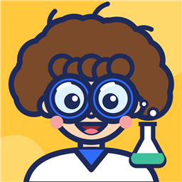

Minik Deneyci: Destek
Minik Deneyci, evdeki güvenli malzemelerle yapılan 20 bilim deneyini (10 kimya, 5 fizik, 5 biyoloji) adım adım, çizimlerle anlatır. Çocuk önce tahmin eder, deneyi yapar, sonucu fotoğraflayıp kendi deney defterine kaydeder.
Sık sorulanlar
Deneyler güvenli mi?
Deneylerde mutfakta bulunan malzemeler kullanılır, ateş gerektiren deney yoktur.
Sıcak su, ocak, makas veya saç kurutma makinesi gereken adımlar "Yetişkinle" olarak işaretlidir ve o adımlarda uyarı çıkar.
Deneyleri her zaman bir yetişkin gözetiminde yapın.
Ücretli mi?
Uygulama ücretsiz indirilir ve "Renk Değiştiren Lahana Suyu" deneyi ücretsizdir. Diğer 19 deney
tek seferlik bir satın almayla açılır; abonelik yoktur.
Uygulamayı silip yeniden yükledim, deneyler kilitli.
Satın alma ekranındaki ya da Ayarlar'daki
Satın alımları geri yükle düğmesine bas; aynı hesapla deneyler yeniden açılır.
Fotoğraflar nereye kaydediliyor?
Sadece telefona. Hiçbir yere gönderilmez. Ayrıntılar için
gizlilik politikası.
Hangi dillerde?
Türkçe, İngilizce, Almanca ve Arapça. Dil, ana ekranın sağ üstündeki düğmeden seçilir.
Support (English)
Minik Deneyci guides children step by step through 20 safe home science experiments. The first experiment is free; the other 19 are unlocked with a one-time in-app purchase (no subscription). If you reinstalled the app, tap Restore purchases on the unlock screen or in Settings. All data stays on the device.
İletişim / Contact
Soru, öneri ya da sorun bildirmek için mağazadaki Minik Deneyci sayfasında yer alan geliştirici iletişim bilgisini kullanabilirsin. / Please use the developer contact on the app's store page.